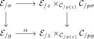
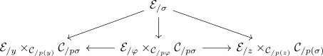
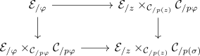

composition of cartesian morphisms
Proposition
Let $\mathcal{C}, \mathcal{D}$ be infinity categories, $p: \mathcal{E} \rightarrow \mathcal{C}$ be an inner fibration ASsume that $\sigma: \Delta^2 \rightarrow \mathcal{E}$ is a \(2\)-simplex in $\mathcal{E}$

such that $\varphi, f$ are p-cartesian
Then so is $g \sim \varphi \circ f$
Proof
Regard $f$ as $\Delta^{ \{0,1\}} \rightarrow \Delta^2$ and $g: \Delta^{ \{0,2\}} \rightarrow \Delta^2$. Both maps are left anodyne maps (cf. left anodyne as saturation of left horn inclusions )
Then consider

and
\begin{displaymath}
\begin{tikzcd}
\mathcal{E}_{/\sigma} \rar \dar & \mathcal{E}_{/y} \times_{\mathcal{C}_{/p(y)} \mathcal{C}_{/p\sigma} \dar \\
\mathcal{E}_{/f} \arrow[]{r}{\beta} & \mathcal{E}_{/y} \times_{\mathcal{C}_{/p(y)}} \mathcal{C}_{/pf} \\
\end{tikzcd}
\end{displaymath}Left anodyne maps induce the trivial fibrations (? + base change functor preserves lifting properties), hence all vertical arrows are trivial fibrations and joyal equivalences (cf. trivial fibration as joyal equivalence)
We want to show, that the lower horizontal maps are trivial fibrations. Both lower horizontal maps are isofibrations, hence by trivial fibration as joyal equivalence and isofibration it suffices to show that one map is a joyal equivalence if and only if so is the other (cf. joyal equivalence satisfy two out of three)

